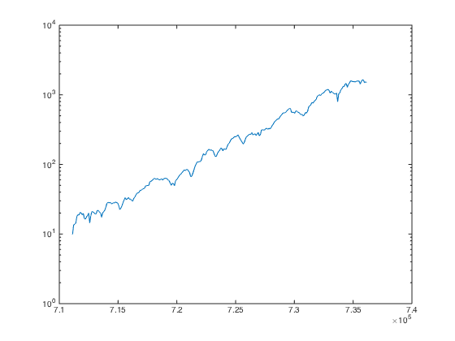
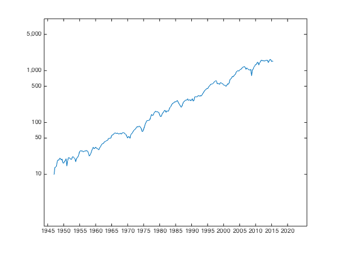
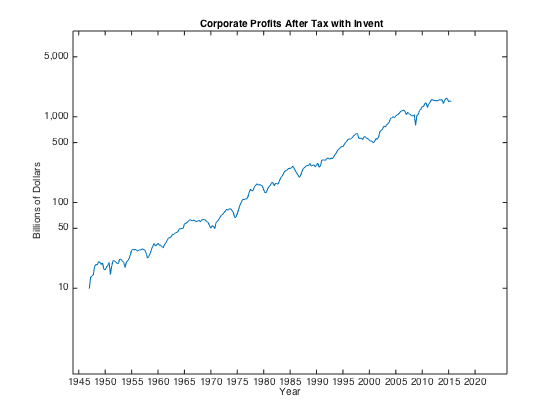
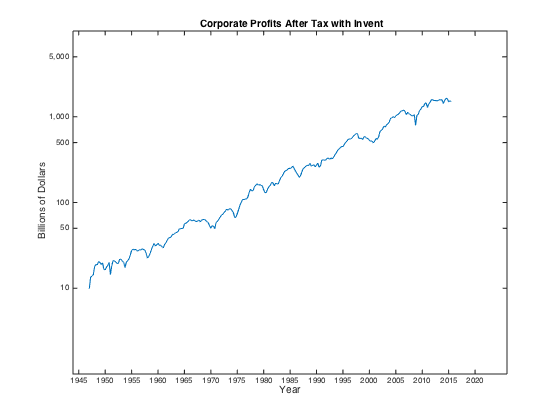
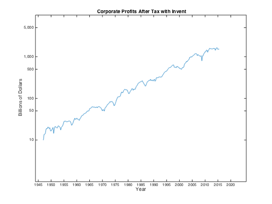
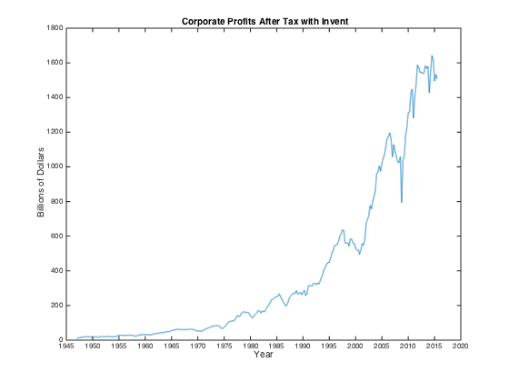

FRED data
We will retrieve data from FRED and present it nicely.
First, let's establish the connection. Note that you should use 'https://' instead of 'http://', FRED no longer accept unsecured connections.
c = fred('https://research.stlouisfed.org/fred2/') ;
We try to retrieve CPATAX: corporate profit before tax here. Alternatively we can retrieve U.S. GDP data by replacing CPATAX with GDP
data = fetch(c, 'CPATAX'); % alternatively data = fetch(c, 'GDP');
Now let's display the time series properly, the data struct contains 11 field. the main data series content is in 'Data'. We want to display the time series in semilog scales. let's take a look at the data content first:
disp(data);
Title: ' Corporate Profits After Tax with Inventory Valua...'
SeriesID: ' CPATAX'
Source: ' US. Bureau of Economic Analysis'
Release: ' Gross Domestic Product'
SeasonalAdjustment: ' Seasonally Adjusted Annual Rate'
Frequency: ' Quarterly'
Units: ' Billions of Dollars'
DateRange: ' 1947-01-01 to 2015-07-01'
LastUpdated: ' 2015-12-22 7:51 AM CST'
Notes: ' BEA Account Code: A551RC1 A Guide to the Nation...'
Data: [275x2 double]
Now Let's get the date & data out of STRUCT Data:
content = data.Data;
dt = content(:,1);
dd = content(:,2);
Plot the semilogy plot
fredplot = semilogy(dt, dd);
Let's set the numerical mark straight
set(gca,'YTick',[10 50 100 500 1000 5000],... 'YTickLabel',{'10','50', '100','500', '1,000','5,000'}); datetick('x','yyyy'); xlim auto; %for finer control, do something like this: %ylim([5 3000]);
Let's add title & labels, by pulling from the STRUCT fields
title(data.Title(1:40), 'FontSize', 10); ylabel(data.Units, 'FontSize', 10); xlabel('Year', 'FontSize', 10);
Let's set fontsize of Xtick Ytick label to 10.
xlhand = get(gca,'XTickLabel'); ylhand = get(gca,'YTickLabel'); set(gca,'XTickLabel',xlhand,'fontsize',8) set(gca,'YTickLabel',ylhand,'fontsize',8)
Let's set the linewidth to 1.5, and make the line half transparent
set(fredplot,'linewidth',1.5); fredplot.Color(4) = 0.5; % 50% transparent
Voila! In the long run, it has been a pretty straight line : ).
In normal scale, this time series looks much more volatile.
fredplotnormal = plot(dt, dd);
datetick('x','yyyy');
title(data.Title(1:40), 'FontSize', 10);
ylabel(data.Units, 'FontSize', 10);
xlabel('Year', 'FontSize', 10);
xlhand = get(gca,'XTickLabel');
ylhand = get(gca,'YTickLabel');
set(gca,'XTickLabel',xlhand,'fontsize',8)
set(gca,'YTickLabel',ylhand,'fontsize',8)
set(fredplotnormal,'linewidth',1.5);
fredplotnormal.Color(4) = 0.5;
